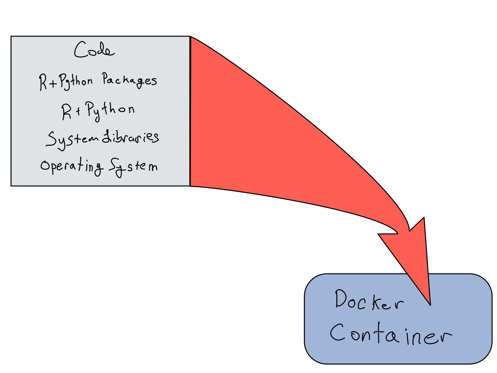

9 Docker for Data Science
If you’re in the data science world, especially the world of “production data science”, you’ve probably heard of Docker – but you might not really be sure what it is or whether you need it.
This chapter is designed to clarify what Docker is and how it might help you. We’ll start with a general intro to Docker, proceed with some discussion of data science-relevant Docker workflows, and then dive in to a hands-on lab that will be just the thing to get you started if you’re not sure where to go.
It’s worth noting that there are many entire books on how to use Docker in a software engineering context. This chapter is really just meant to give you a jumping off point. If you find that you want to get deep, I’d recommend you pick up another resource after this.
9.1 Containers are a Packaging Tool
Let’s tell a story that might feel familiar. A collaborator sends you a piece of code. You go to run it on your machine and an error pops up Python 3.7 not found. So you spend an hour on Stack Overflow, figuring out how to install version 3.7 of Python.
Then you try to run the code again, which creates some maps, and this time get an error System library gdal not found. “Augh!” you cry, “Why is there not a way to include all of these dependencies with the code?!?”
You have just discovered one of the primary use cases for a container.
Containers are a way to package up some code with all of its dependencies, making it easy to run the code later, share it with someone else for collaboration, or put it onto a production server – all while being reasonably confident that you won’t ever have to say, “well, it runs on my machine”.
Docker is by far the most popular open-source containerization platform. So much so that for most purposes container is a synonym for Docker container.1 In this chapter, containers will exclusively refer to Docker containers.
In addition to making it easy to get all of the dependencies with an app, Docker also makes it easy to run a bunch of different isolated apps without having them interfere with each other.
Virtual machines of various sorts have been around since the 1960s, and are still used for many applications. In contrast to a virtual machine, Docker is much more lightweight. Once a container has been downloaded to your machine, it can start up in less than a second.
This is why Docker – not the only, or even the first open source containerization system – was the first to hit the mainstream, as much as any esoteric code-development and deployment tool can be said to “hit the mainstream”.
This means that – for the most part – anything that can run in a Docker container in one place can be run on another machine with very minimal configuration.
There are exceptions. Until recently, a huge fraction of laptop CPUs were of a particular architecture called x86.
Apple’s recent M1 and M2 chips run on an ARM64 architecture, which had previously been used almost exclusively for phones and tablets. The details aren’t super important, but the upshot is that getting containers working on Apple silicon may not be trivial.
Docker doesn’t completely negate the need for other sorts of IT tooling, because you still have to provision the physical hardware somehow, but it does make everything much more self-contained. And if you’ve already got a laptop, you can easily run Docker containers with just a few commands (we’ll get to that below).
9.2 Containers for Data Science
In a data science context, there are two main ways you might use containers – as a way to package a development environment for someone else to use, and as a way to package a finished app for archiving, reproducibility, and production.
A reminder from the reproducibility chapter:
The data science reproducibility stack generally includes 6 elements:
- Code
- Data
- R + Python Packages
- R + Python Versions
- Other System Libraries
- Operating System
If you’re running RStudio Server or JupyterHub on a centralized server, Docker can be a great way to maintain that server. In my opinion, maintaining a Docker container is one of the easiest ways to start on an infrastructure-as-code journey.
We’re not going to get terribly deep into this use case, as creating the overwhelming majority of the work involved is standard IT/Admin tasks for hosting a server - things like managing networking, authentication and authorization, security, and more.
If you’re thinking about hosting a data science workbench in Docker, you should think carefully about whether you want to deal with standalone containers, or whether you’re really looking for container orchestration using Kubernetes.
In this chapter, I’ll suggest trying to stand up RStudio Server in a container on your desktop, but don’t let the ease fool you. The majority of difficulties with administering a server are the same, even if you put your application stack into a Docker container. Section II of this book will have a lot more on those challenges, and I suggest you check it out if you’re interested.
Instead, we’re going to stick with talking about how actual data scientists would want to use Docker: to archive and share completed data science assets.

In this pattern, you’ll put your whole reproducibility stack inside the container itself – perhaps minus your data.
9.3 Container Gotchas
Docker containers are great for certain purposes, but there are also some tradeoffs that it’s worth being aware of.
The first is the tradeoff of Docker’s strength: a container only gets access to the resources it has specifically been allowed to access.
This is a great feature for security and process isolation, but it means you may run into some issues with networking and access to system resources, like your files. You’ll have to develop a reasonably good mental model of the relationship of the Docker container to the rest of your machine in order to be able to develop effectively.
It’s worth noting that in some environments – especially highly-regulated ones – a Docker container may not be a sufficient level of reproducibility. Differences between machines at the physical hardware level could potentially mean that numeric solutions could differ across machines, even with the same container. You probably know if you’re in this kind of environment and you have to maintain physical machines.
There are also several antipatterns that using a container could facilitate.
The biggest reproducibility headache for most data scientists is managing R and Python package environments. While you can just install a bunch of packages into a container, save the container state, and move on, this really isn’t a good solution.
If you do this, you’ve got the last state of your environment saved, but it’s not really reproducible. If you come back next year and need to add a new package, you’ll have no way to do it without potentially breaking the whole environment.
The obvious solution is to write down the steps for creating your Docker container – in a file called a Dockerfile. Here, it’s tempting to create a Dockerfile that looks like:
But this is also completely non-reproducible. Whenever you rebuild your container, you’ll install the newest versions of Shiny and Dplyr afresh, potentially ruining the reproducibility of your code. For that reason, the best move is to still use R- and Python-specific libraries for capturing package state – like renv and rig in R and virtualenv , conda , and pyenv in Python – rather than relying on Docker for that job. There’s more on those topics in the Chapter 2 on environments.
9.4 Trying out Docker
If you’ve read this far, you probably have a reasonably good mental model of when you might want to use Docker to encapsulate your data science environment or when you might not. The rest of this chapter will be a hands-on intro to using Docker to run a finished app.
9.4.1 Prerequisites
In order to get started with Docker, you’ll need to know a few things. The first is that you’ll have to actually have Docker installed on an environment you can use. The easiest way to do this is to install Docker Desktop on your laptop, but you can also put Docker on a server environment.
We’re going to use Docker from a terminal on your machine. I’ll give you all the commands you’ll need, but you need to know how to find and open a terminal.
If that’s new to you, you might want to skip ahead and check out the beginning of Chapter 8 so you can at least open a terminal.
9.4.2 Getting Started
Let’s get started with an example that demonstrates the power of Docker right off the bat.
TODO: put model in S3
Once you’ve got Docker Desktop installed and running, type the following in your terminal:
docker run --rm -d \
-p 8080:8080 \
--name palmer-plumber \
alexkgold/plumberOnce you type in this command, it’ll take a minute to pull, extract, and start the container.
Once the container starts up, you’ll see a long sequence of letters and numbers. Now, navigate to http://localhost:8080in your browser (this URL has to be exact!), and you should see the documentation for an R language API that lets you explore the Palmer Penguins data set
That was probably pretty uninspiring. It took a long time to download and get started. In order to show the real power of Docker, let’s now kill the container with
docker kill palmer-plumberYou can check that the container isn’t running by trying to visit that URL again. You’ll get an error.
Let’s bring the container back up by running the docker run command above again.
This time is should be quick – probably less than a second – now that you’ve got the container downloaded. THIS is the power of Docker.
As you click around, seeing penguin stats and seeing plots, you might notice that nothing is showing up on the command line…but what if I want logs of what people are doing? Or I need to look at the app code?
You can get into the container to poke around using the command
docker exec -it palmer-plumber /bin/bashOnce you’re in, try cat api/plumber.R to look at the code of the running API.
When you need to get out, you can leave by typing exit.
docker exec is a general purpose command for executing a command inside a running container. The overwhelming majority of the time I use it, it’s to get a terminal inside a running container so I can poke around.
You can spend a lot of time getting deep into why the command works, but just memorizing (or, more likely, repeatedly googling) docker exec -it <container> /bin/bash will get you pretty far.
If you’re used to running things on servers, you might be in the habit of SSH-ing in, poking around, and fixing things that are broken. This isn’t great for a lot of reasons, but it’s a huge anti-pattern in Docker land.
Containers are stateless and immutable. This means that anything that happens in the container stays in the container – even when the container goes away. If something goes wrong in your running container, you may need to exec in to poke around, but you should fix it by rebuilding and redeploying your image, not by changing the running container.
One nicety of Docker is that it gives you quick access to the most common reason you’d probably exec into the container – looking at logs.
After you’ve clicked around a little in the API, try running:
docker logs palmer-plumberWe’re done with this container now. Feel free to kill it before you move on.
Great! We’ve played around with this container pretty thoroughly.
Before we get into how this all works, let’s try one more example.
Go back into your terminal and navigate to a directory you can play around in (the cd command is your friend here, see Chapter 8 if you’re not familiar). Run the following in your terminal:
docker run \
-v ${PWD}:/project-out \
alexkgold/batch:0.1It’ll take a minute to download – this container is about 600Mb. You may need to grant the container access to a directory on your machine when it runs. This container will take a few moments to run. If you go to the directory in file browser, you should be able to open hello.html in your web browser – it should be a rendered version of a Jupyter Notebook.
This notebook is just a very basic visualization, but you can see how it’s nice to be able to render a Jupyter Notebook locally without having to worry about making sure you had any of the dependencies installed. This is good both for running on demand, and also for archival purposes.
Now that we’ve got Docker working for you, let’s take a step back, explain what we just did, and dive deeper into how this can be helpful.
Hopefully these two examples are exciting – in the first, we got an interactive web API running like a server on our laptop in just a few seconds – and without installing any of the packages or even a version of R locally. In the second, we rendered a Jupyter Notebook using the quarto library – again, without worrying about downloading it locally.
9.5 Container Lifecycle
Before we dig into the nitty-gritty of how that all worked – and how you might change it for your own purposes, let’s spend just a minute clarifying the lifecycle of a Docker container.
This image explains the different states a Docker container can be in, and the commands you’ll need to move them around.

A container starts its life as a Dockerfile. A Dockerfile is a set of instructions for how to build a container. Dockerfiles are usually stored in a git repository, just like any other code, and it’s common to build them on push via a CI/CD pipeline.2
A working Dockerfile gets built into a Docker image with the build command. Images are immutable snapshots of the state of the container at a given time.
It is possible to interactively build a container as you go and snapshot to create an image, but for the purposes of reproducibility, it’s generally preferable to build the image from a Dockerfile, and adjust the Dockerfile if you need to adjust the image.
Usually, the image is going to be the thing that you share with other people, as it’s the version of the container that’s compiled and ready to go.
Docker images can be shared directly like any other file, or via sharing on an image registry via the push and pull commands.
If you’re familiar with git, the mental model for Docker is quite similar. There is a public Docker Hub you can use, and it’s also possible to run private image registries. Many organizations make use of the image registries as a service offerings from cloud providers. The big 3’s are Amazon’s Elastic Container Registry (ECR), Azure Container Registry, and Google Container Registry.
Once you’ve got an image downloaded locally, you can run it with the run command. Note that you generally don’t have to pull before running a container, as it will auto-pull if it’s not available.
Now that you’re all excited, let’s dig in on how the docker run command works, and the command line flags we used here, which are the ones you’ll use most often.
9.6 Understanding docker run
At it’s most basic, all you need to know is that you can run a Docker image locally using the docker run <name> command. However, Docker commands usually use a lot of command line flags – so many that it’s easy to miss what the command actually is.
A command line flag is an argument passed to a command line program.
There’s a lot more about using command line tools in Chapter 8.
Let’s pull apart the two commands we just used, which use the command line flags you’re most likely to need.
9.6.1 Parsing container names
To start with, let’s parse the name of the container. In this example, you used two different container names – alexkgold/plumber and alexkgold/batch:0.1. All containers have an id, and they may also have a tag. If you’re using the public DockerHub registry, like I am, container ids are of the form <user>/<name>. This should look very familiar if you already use a git repository.
In addition to an id, containers can also have a tag. For example, for the alexkgold/batch image, we specified a version: 0.1. If you don’t specify a tag when pulling or pushing an image, you’ll automatically create or get latest – the newest version of a container that was pushed to the registry.
Users often create tags that are relevant to the container – often versions of the software contained within. For example, the rocker/r-ver container, which is a container pre-built with a version of R in it uses tags for the version of R.
All these examples use the public DockerHub. Many organizations use a private image registry, in which case you can prefix the container name with the URL of the registry.
9.6.2 docker run flags
In this section we’re going to go through the docker run flags we used in quite a bit of detail.
If you just want a quick reference later, there’s a cheatsheet in [Appendix @docker-cheat].
Let’s first look at how we ran the container with the plumber API in it.
For this container, we used the --rm flag, the -d flag, the -p flag with the argument 8080:8080, and the --name flag with the argument plumber-palmer.
The --rm flag removes the container after it finishes running. This is nice when you’re just playing around with a container locally because then you can use the same container name repeatedly, but it’s a flag you’ll almost never use in production because it removes everything from the container, including logs.
You can check this by running docker kill palmer-plumber to make sure the container is down and then try to get to the logs with docker logs palmer-plumber. But they don’t exist because they got cleaned up!
Feel free to try running to container without the --rm flag, playing around, killing the container, and then looking at the logs. Before you’re able to bring back another container with the same name, you’ll have to remove the container with docker rm palmer-plumber.
The -d flag instructs the container to run in detached mode so the container won’t block the terminal session. You can feel free to run the container attached – but you’ll have to quit the container by aborting the command from inside the terminal (Ctrl + c), or opening another terminal to docker kill the container.
The -p flag publishes a port from inside the container to the host machine. So by specifying -p 8080:8080, we’re taking whatever’s available on the port 8080 inside the container and making it available at the same port on the localhost of the machine that’s hosting the container.
TODO: picture of ports
Port forwarding is always specified as <host port>:<container port>. Try playing around with changing the values to make the API available on a different port, perhaps 9876. For a more in-depth treatment of ports, see Chapter 12.
The --name flag gives our container a name. This is really just a convenience so that you could do commands like docker kill in terms of the container name, rather than the container ID, which will be different for each person who runs the command.
In a lot of cases, you won’t bother with a name for the container.
You can find container ID using the docker ps command to get the process status. In the case below, I could control the container with the name palmer-plumber, or with the container ID. You can abbreviate container IDs as long as they’re unique – I tend to use the first three characters.
❯ docker ps [12:23:13]
CONTAINER ID IMAGE COMMAND CREATED STATUS PORTS NAMES
35bd54e44015 alexkgold/plumber "R -e 'pr <- plumber…" 29 seconds ago Up 28 seconds 0.0.0.0:8080->8080/tcp palmer-plumberNow let’s head over to the batch document rendering, where we only used one command line flag -v ${PWD}:/project-out, short for volume. To demonstrate what this argument does, navigate to a new directory on your command line and re-run the container without the argument.
Wait…where’d my document go?
Remember – containers are completely ephemeral. What happens in the container stays in the container. This means that when my document is rendered inside the container, it gets deleted when the container ends its job.
But that’s not what I wanted – I wanted to get the output back out of the container.
The solution – making data outside the container available to the container and vice-versa – is accomplished by mounting a volume into the container using the -v flag. Like with mounting a port, the syntax is -v <directory outside container>:<directory inside container>.

This is an essential concept to understand when working with containers. Because containers are so ephemeral, volumes are the way to get anything from your host machine in, and to persist anything that you want to outlast the lifecycle of the container.
In this case, we actually used a variable ${PWD}, which will be evaluated to the current working directory to be the directory project-out inside the container, so the rendered document can be persisted after the container goes away.
9.7 Build your own with Dockerfiles
So far, we’ve just been running containers based on images I’ve already prepared for you. Let’s look at how those images were created so you can try building your own.
A Dockerfile is just a set of instructions that you use to build a Docker image. If you have a pretty good idea how to accomplish something on a running machine, you shouldn’t have too much trouble building a Dockerfile to do the same, as long as you remember two things:
TODO: Image of build vs run time
- The difference between build time and run time. There are things that should happen at build time – like setting up the versions of R and Python, copying in the code you’ll run, and installing the system requirements. That’s very different from the thing I want to have happen at run time – rendering the notebook or running the API.
- Docker containers only have access to exactly the resources you provide to them at both build and runtime. That means that they won’t have access to libraries or programs unless you give them access, and you also won’t have access to files from your computer unless you make them available.
There are many different commands you can use inside a Dockerfile, but with just a handful, you’ll be able to build most images you might need.
Here are the important commands you’ll need for getting everything you need into your images.
FROM– every container starts from a base image. In some cases, like in my Jupyter example, you might start with a bare bones container that’s just the operating system (ubuntu:20.04). In other cases, like in myshinyexample, you might start with a container that’s almost there, and all you need to do is to copy in a file or two.RUN– run any command as if you were sitting at the command line inside the container. Just remember, if you’re starting from a very basic container, you may need to make a command available before you can run it (likewgetin my container below).COPY– copy a file from the host filesystem into the container. Note that the working directory for your Dockerfile will be whatever your working directory is when you run your build command.
One really nice thing about Docker containers is that they’re built in layers. Each command in the Dockerfile defines a new layer. If you make changes below a given layer in your Dockerfile, rebuilding will be easy, because Docker will only start rebuilding at the layer with changes.
If you’re mainly building containers for finished data science assets to be re-run on demand, there’s only one command you need:
CMD- Specifies what command to run inside the container’s shell at runtime. This would be the same command you’d use to run your project from the command line.
If you do much digging, you’ll probably run into the ENTRYPOINT command, which can take a while to tell apart from CMD. If you’re building containers to run finished data science assets, you shouldn’t need ENTRYPOINT. If you’re building containers to – for example – accept a different asset to run or allow for particular arguments, you’ll need to use ENTRYPOINT to specify the command that will always run and CMD to specify the default arguments to ENTRYPOINT, which can be overridden on the command line.3
Here’s the Dockerfile I used to build the container for the Jupyter Notebook rendering. Look through it. Can you understand what it’s doing?
# syntax=docker/dockerfile:1
FROM ubuntu:20.04
# Copy external files
RUN mkdir -p /project/out/
COPY ./requirements.txt /project/
COPY ./hello.ipynb /project/
# Install system packages
RUN apt-get update && apt-get install -y \
wget python3 python3-pip
# Install quarto CLI + clean up
RUN wget https://github.com/quarto-dev/quarto-cli/releases/download/v0.9.83/quarto-0.9.83-linux-amd64.deb
RUN dpkg -i ./quarto-0.9.83-linux-amd64.deb
RUN rm -f ./quarto-0.9.83-linux-amd64.deb
# Install Python requirements
RUN pip3 install -r /project/requirements.txt
# Render notebook
CMD cd /project && \
quarto render ./hello.ipynb && \
# Move output to correct directory
# Needed because quarto requires relative paths in --output-dir:
# https://github.com/quarto-dev/quarto-cli/issues/362
rm -rf /project-out/hello_files/ && \
mkdir -p /project-out/hello_files && \
mv ./hello_files/* /project-out/hello_files/ && \
mv ./hello.html /project-out/Once you’ve created your Dockerfile, you build it into an image using docker build -t <image name>. You can then push that to DockerHub or another registry using docker push.
9.8 Comprehension Questions
- What does using a Docker container for a data science project make easier? What does it make harder?
- Draw a mental map of the relationship between the following: Dockerfile, Docker Image, Docker Registry, Docker Container
- When would you want to use each of the following flags for
docker run? When wouldn’t you?-p,--name,-d,--rm,-v
- What are the most important Dockerfile commands?
9.9 Lab: Putting an API in a Container
Let’s put our Penguin model prediction API from Chapter 4 into a container.
Again, Vetiver has some nice tooling to make this very easy to do. You should follow the instructions on the {vetiver} website for how to generate your Dockerfile.
One thing to note about this container – it follows best practices for how to put data (in this case the machine-learning model) into the container. That means the model isn’t built into the container. Instead, the container knows how to fetch the model.
That means that you’ll need to have the model_board object available. Look back at Lab 4 if you’ve restarted your Python session since you last ran the {vetiver} code.
Once you’ve generated your Dockerfile, take a look at it. Here’s the one for my model:
Dockerfile
# # Generated by the vetiver package; edit with care
# start with python base image
FROM python:3.9
# create directory in container for vetiver files
WORKDIR /vetiver
# copy and install requirements
COPY vetiver_requirements.txt /vetiver/requirements.txt
#
RUN pip install --no-cache-dir --upgrade -r /vetiver/requirements.txt
# copy app file
COPY app.py /vetiver/app/app.py
# expose port
EXPOSE 8080
# run vetiver API
CMD ["uvicorn", "app.app:api", "--host", "0.0.0.0", "--port", "8080"]This auto-generated Dockerfile is very nicely commented, so its easy to follow.
Now build the container using docker build -t penguin-model-local ..
The docker build command will only work if you’re in the directory with the container.
Ok, now let’s run the container using
If you go to http://localhost:8080 you’ll find that…it doesn’t work? Why? If you run the container attached (remove the -d from the run command) you’ll get some feedback that might be helpful.
In line 15 of the Dockerfile, we copied the app.py in to the container. Let’s take a look at that file to see if we can find any hints.
app.py
Look at that (very long) line 6. The API is connecting to a local directory to pull the model. Is your spidey sense tingling? Something about container filesystem vs host filesystem?
That’s right – the temp file indicated is inside the /var directory on my machine, but that directory doesn’t exist at /var inside the container when it’s running. In order to get this to work, I’ve got to mount the model in at run time.
Add a -v /var:/var to your run command like so
#| eval: false
docker run --rm -d \
-p 8080:8080 \
--name penguin-model \
-v /var:/var \
penguin-model-localDepending on the permissions of the /var directory on your machine, you may need to run the docker run command prefixed by sudo.
And NOW you should be able to get your model up in no time.
In Chapter 10, we’ll worry about putting the model somewhere more permanent so you don’t have to worry about this issue.
There are some other types of containers that are commonly used for specialized use cases, like high-performance computing.↩︎
This might sound backward – the key is to realize that this is always how it works. The default
ENTRYPOINTis/bin/sh -c, soCMDis always just providing arguments to theENTRYPOINT.↩︎